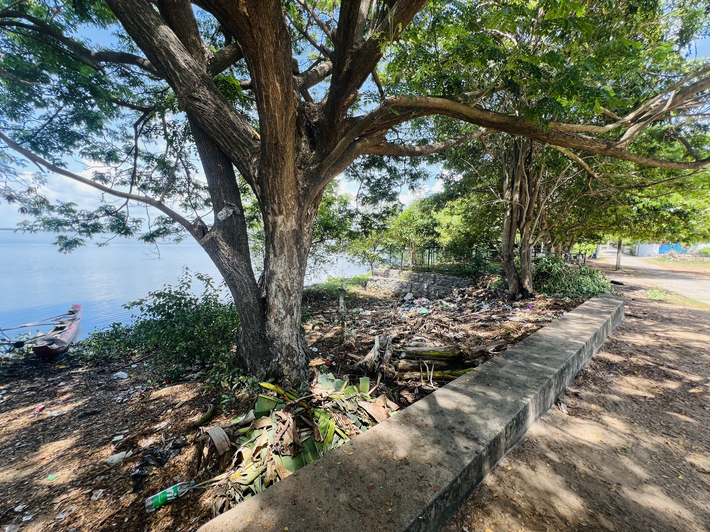
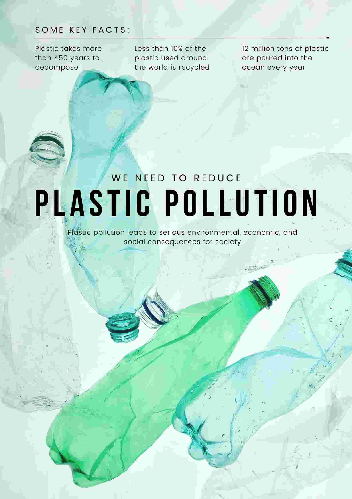
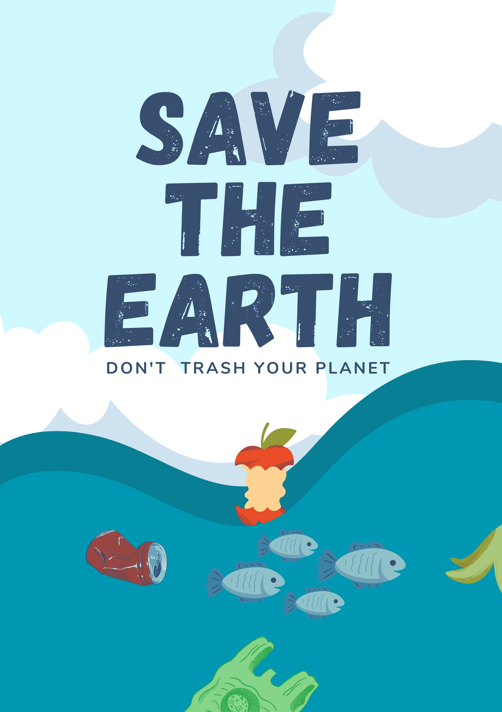

Nature, our planet's greatest treasure, is under siege. From plastic pollution choking our oceans to rampant deforestation and the relentless march of climate change, humanity stands at a critical juncture in its relationship with the environment. The consequences of our actions are starkly evident, yet the urgency of the situation demands a concerted effort to protect and preserve nature from further destruction.

At the heart of this crisis lies the pervasive issue of environmental degradation. Plastic pollution, one of the most visible manifestations of this problem, has reached epidemic proportions. Every year, millions of tons of plastic waste find their way into our oceans, posing a grave threat to marine life and ecosystems. From seabirds entangled in plastic debris to marine mammals ingesting toxic microplastics, the toll of our plastic addiction is staggering. To combat this menace, concerted efforts are needed to reduce plastic consumption, promote recycling, and develop sustainable alternatives.
Similarly, deforestation remains a pressing concern, with vast swathes of forests disappearing each year to make way for agriculture, logging, and urban development. Forests, essential carbon sinks and biodiversity hotspots, are being lost at an alarming rate, exacerbating climate change and driving countless species to the brink of extinction. Protecting and restoring forests must be a top priority, requiring the implementation of stringent conservation measures, sustainable land-use practices, and the empowerment of local communities.
Climate change, fueled by the relentless burning of fossil fuels and deforestation, poses perhaps the greatest existential threat to life on Earth. Rising temperatures, extreme weather events, melting ice caps, and rising sea levels are already wreaking havoc on ecosystems and human communities around the world. Urgent action is needed to transition to renewable energy sources, reduce greenhouse gas emissions, and mitigate the impacts of climate change through adaptation and resilience-building efforts.
To protect our nature from these destroyers, a multifaceted approach is required. At the individual level, we can make a difference by adopting sustainable lifestyle choices, reducing our carbon footprint, and advocating for environmental stewardship in our communities. Businesses and industries must embrace sustainability as a core value, investing in green technologies, minimizing waste, and prioritizing environmental responsibility in their operations.
Governments play a crucial role in shaping policies and regulations that promote environmental conservation and address the root causes of environmental destruction. This includes enacting laws to protect natural habitats, incentivizing renewable energy development, and holding polluters accountable for their actions. International cooperation is also essential, as environmental challenges transcend borders and require collective action on a global scale.
Education and awareness are key components of any successful conservation effort. By fostering a deeper understanding of the interconnectedness of all life on Earth and the importance of preserving nature for future generations, we can inspire individuals and communities to take meaningful action to protect the environment. Environmental education should be integrated into school curricula, public outreach campaigns, and media platforms to reach a broad audience and galvanize support for conservation initiatives.
Ultimately, protecting our nature from these destroyers requires a fundamental shift in our relationship with the environment. We must move away from a mindset of exploitation and consumption towards one of stewardship and respect. Nature is not an infinite resource to be plundered at will but a fragile ecosystem that sustains all life on Earth. It is incumbent upon us, as custodians of this planet, to safeguard its natural beauty and diversity for generations to come.
In conclusion, the challenges facing our planet are daunting, but they are not insurmountable. By recognizing the interconnectedness of all living things and the profound impact of our actions on the environment, we can work together to protect and preserve nature from further destruction. Through collective action, innovation, and a shared commitment to sustainability, we can create a brighter, more sustainable future for ourselves and for the countless species with whom we share this planet. The time to act is now.

Plastic pollution refers to the accumulation of plastic objects and particles in the environment, particularly in oceans, rivers, lakes, and other natural habitats. It occurs when plastic waste is improperly disposed of or when plastic products are not recycled efficiently.
Why plastics are harmful for our Envirment
- Durability: Plastics are durable materials, and many types of plastics can take hundreds of years to decompose fully. This longevity means that once plastic enters the environment, it can persist for a long time, causing harm to ecosystems and wildlife.
- Ubiquity:Plastics are widely used in various industries and in everyday products, including packaging, electronics, clothing, and construction materials. The widespread use of plastics increases the likelihood of plastic waste ending up in the environment.
- Mismanagement: Inadequate waste management systems in many parts of the world contribute to plastic pollution. Improper disposal of plastic waste, such as littering or illegal dumping, allows plastics to enter waterways and ultimately reach the oceans.
- Impact on Wildlife:Plastic pollution poses a significant threat to marine life and terrestrial wildlife. Animals can become entangled in plastic debris or ingest it, leading to injuries, suffocation, starvation, and death. Plastic pollution also affects habitats and ecosystems, disrupting natural processes and biodiversity.
- Microplastics: Over time, larger plastic items break down into smaller pieces called microplastics, which are less than 5 millimeters in size. Microplastics are found throughout the environment, including in the air, soil, and water. They can be ingested by animals and humans, potentially causing harm to health and ecosystems.

Building a Plastic-Free Society: A Path Towards Environmental Sustainability
In recent decades, the proliferation of plastic usage has led to an unprecedented environmental crisis, with plastic pollution posing a significant threat to ecosystems, wildlife, and human health. To address this pressing issue, the transition to a plastic-free society is imperative. By embracing sustainable alternatives and implementing effective strategies, we can pave the way for a cleaner, healthier planet.
One of the primary steps towards creating a plastic-free society involves reducing plastic production and consumption. This can be achieved through the development and adoption of eco-friendly alternatives to plastic products. Biodegradable materials, such as plant-based plastics or compostable packaging, offer viable solutions that minimize environmental impact and promote sustainability. Additionally, encouraging consumers to opt for reusable items instead of single-use plastics can significantly reduce plastic waste generation.
Improving waste management infrastructure is another crucial aspect of building a plastic-free society. Effective recycling programs, coupled with proper waste segregation and disposal practices, are essential for minimizing the accumulation of plastic waste in landfills and natural environments. Furthermore, promoting education and awareness about the importance of recycling and responsible waste management can empower individuals and communities to take proactive steps towards reducing their plastic footprint.
Implementing policies and regulations to ban or restrict the use of single-use plastics is a key policy measure to combat plastic pollution. By prohibiting items such as plastic bags, straws, and styrofoam containers, governments can incentivize businesses and consumers to adopt more sustainable alternatives. Additionally, supporting initiatives that promote extended producer responsibility encourages manufacturers to take accountability for the lifecycle of their products, including proper disposal and recycling.
Collaboration between governments, businesses, civil society organizations, and individuals is essential for driving systemic change and fostering a culture of sustainability. Public-private partnerships can facilitate innovation and investment in research and development of eco-friendly materials and technologies. Community-led initiatives, such as beach clean-ups and plastic recycling programs, empower citizens to actively participate in environmental conservation efforts and raise awareness about the detrimental impacts of plastic pollution.
Creating a plastic-free society requires collective action and a commitment to embracing sustainable practices at all levels of society. By harnessing the power of innovation, education, and policy intervention, we can work towards a future where plastic pollution is no longer a threat to our planet. Together, let us strive towards building a cleaner, healthier world for present and future generations.
